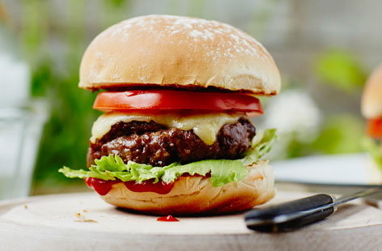

Cheese burger

About the classic Cheese burger
Most of you have probably already had one before, but the cheese burger is a timeless staple of western society. It's simplicity in design, 2 buns, a slice of cheese and a burger makes it very accessible to beginner cookers. It's ability to be easily customisable with the toppings of your choice also makes it an extra attractive option.
Ingredients
- 1KG of Minced beef
- 300g of Breadcrumbs
- 140g of cheddar cheese or sliced cheese
- 1 bunch of small bunch parsley
Steps
- Crumble the mince in a bowl and then tip the breadcrumbs and cheese and then mix everything thoroughly.
- Shape the mix into 12 burgers and chill until ready to cook for up to 12 hours.
- Heat the grill to high and place the burgers on the grill. Let the burgers grill for 6-8 minutes.
- Toast the buns and wait for them to come out toasted.
- Assemble the burger and choose what toppings you would like.
Home